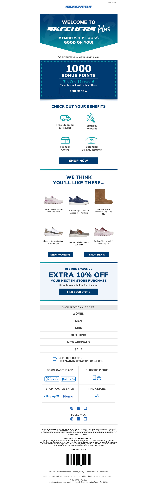

Skechers Email Audit
Thanks for completing your Skechers Plus account
2026-03-12 · SKECHERS PLUS <no-reply@emails.skechers.com>
Business Impact Score: 6/10
Executive Summary
This is a solid post-registration loyalty onboarding email with the right lifecycle trigger, but it still feels more like a templated CRM confirmation than a memorable Skechers Plus moment. The business logic is sound — confirm completion, reward the action, drive next behavior — but the experience likely underplays the emotional and commercial value of joining the program.
Evidence
What’s Working
- The trigger is meaningful: the user has completed their Skechers Plus account
- The preheader introduces immediate value: “here’s a $5 reward”
- That is good lifecycle sequencing: confirm the milestone
- reinforce the benefit
- create a reason to come back and shop
- This type of email can improve: trust in the loyalty program
- perceived value of registration
- return-to-site motivation
What’s Weak
- The email appears to be doing too many jobs at once: account completion confirmation
- loyalty benefit introduction
- general marketing follow-up
- That weakens the hierarchy
- The key value proposition — what Skechers Plus now means for the customer — may not be presented sharply enough
- The $5 reward is a good hook, but if the email does not make it operationally clear: where it lives
- how to use it
- what restrictions apply
- when it expires
- then the reward feels less real than it should
- This should feel like a meaningful membership activation moment, not just another triggered email
- Email-to-site continuity
- This email lives or dies on the click path.
- If the user lands in a generic experience with no visible sign of: member state
- reward availability
- next best shopping action
- then the promise of the email weakens immediately.
- The ideal continuity would be: logged-in member state visible
- reward surfaced clearly
- simple path to redeem or shop
- minimal friction from email claim to on-site action
Recommendations
- Make the membership milestone the hero
- Lead more clearly with: your Skechers Plus account is complete
- you’re in
- here’s your immediate value
- That should be the emotional center of the email.
- Make the $5 reward unmistakably usable
- The email should answer, quickly and clearly: what the reward is
- where it can be found
- how it is redeemed
- any relevant limits
- Tighten the first CTA
- The strongest next action should probably be: use your reward
- shop now
- view your Skechers Plus benefits
- Not a broad set of unrelated promotional paths.
- Preserve loyalty context after click
- The site experience should continue the same story: member recognized
- reward visible
- next step obvious
Bottom Line
This is a smart email to have in the lifecycle. But it should feel more clearly like a benefit activation and membership confirmation moment, not just a standard CRM send with a reward attached.
Visual Reference
